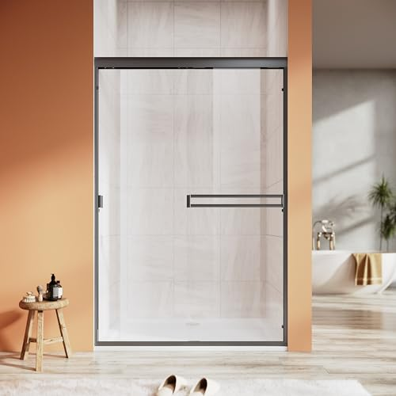
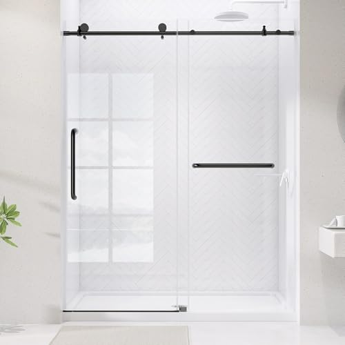
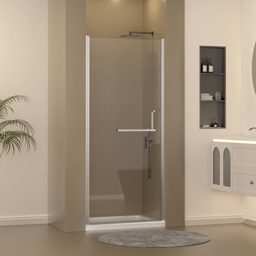
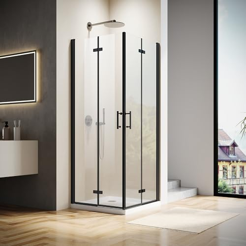
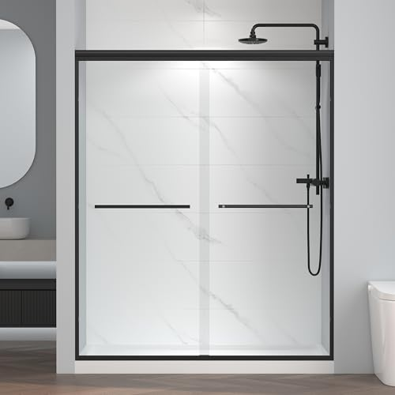
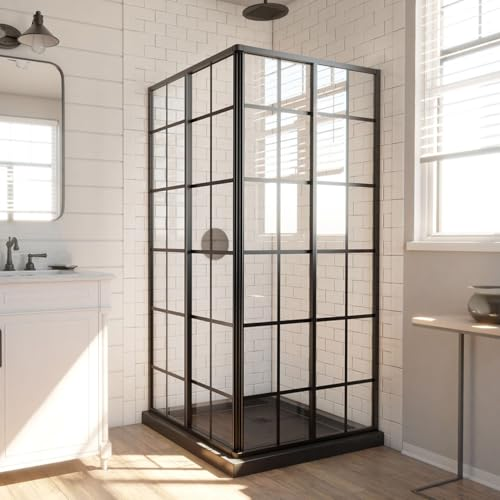
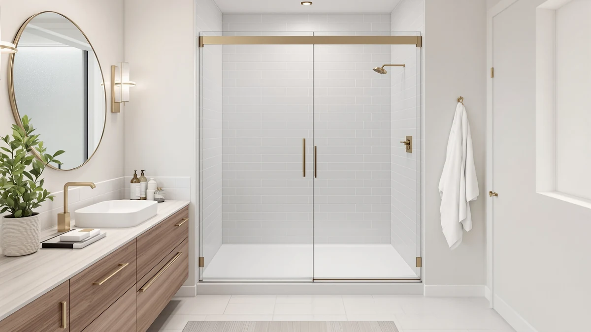
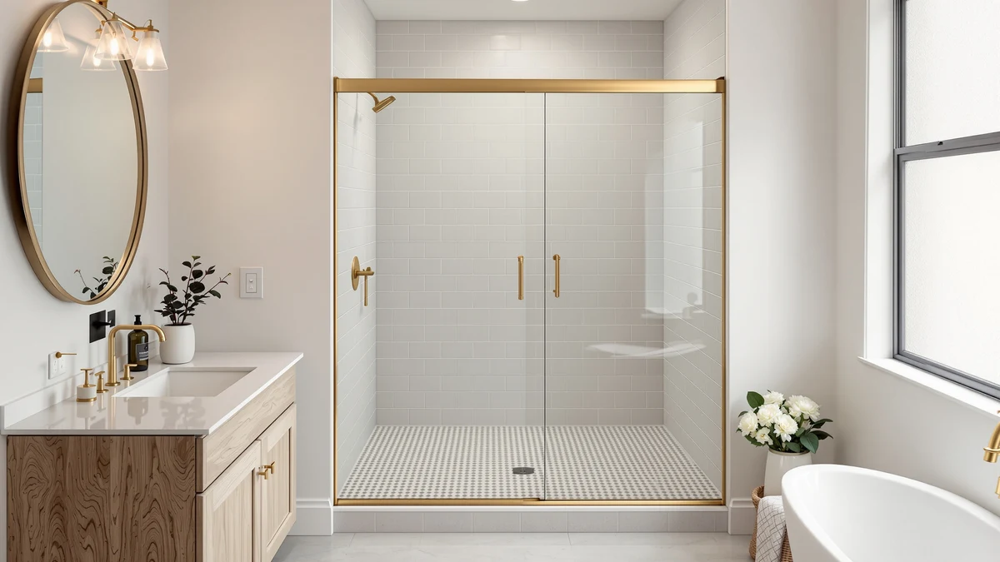
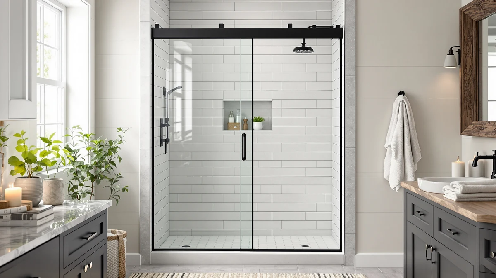
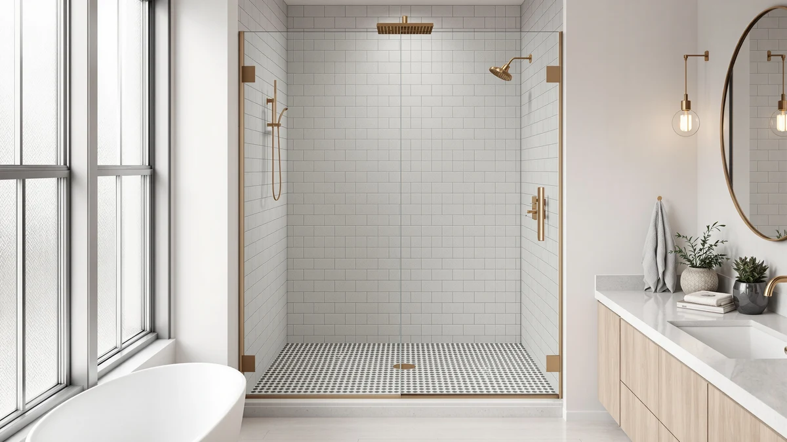

A shower door has to fit an opening that is rarely square.
Bathroom walls are seldom plumb, and a door that cannot absorb the difference binds, leaks or never fits. The door you keep and the one you return differ in three places: its adjustable width range, the way it opens and the glass it uses. We compare doors on those points, using spec sheets, current Amazon prices and what verified owners report.
Our 7 picks, side by side
From our full comparison of shower doors. Each one wins a specific job.
| Pick | Product | Price | Buy |
|---|---|---|---|
| Our Pick | Woodbridge 57.5-60" Wx76 H Soft Close Frameless Shower DoorThe best overall: thick 10mm frameless glass with soft-close rollers from a brand people recognize. | $614.97 | Check price |
| Budget Pick |  UCALAFEE Shower Door 44-48"The budget pick: a legitimate sliding glass door for a small alcove or tub-to-shower job at a great price. | $259.99 | Check price |
| Best matte black |  Frameless Shower Door Matte Black 56-60’’ W x 75’’ H Single Bypass Shower DoorThe best matte black: an on-trend frameless bypass slider that anchors a modern bathroom. | $249.30 | Check price |
| Best pivot |  Frameless Pivot Shower Door 33-34" W x 72" HThe best pivot: a frameless swing door that opens wide for a walk-in shower. | $299.99 | Check price |
| Best corner |  Hydrave Corner Shower Enclosure 34 in.D x 34 in. W x 72 in. H| Shower DoorThe best corner enclosure: two glass walls that turn a corner into a proper shower. | $269.99 | Check price |
| Runner-Up |  ENSO SENKA 56-60" W x 72" H Semi-Frameless Bypass Sliding Shower DoorThe runner-up: a semi-frameless bypass slider that gets close to the flagship look for less. | $269.99 | Check price |
| Premium pick |  DreamLine French Corner 34 1/2 in. D x 34 1/2 in. W x 72 in. H Framed SlidingThe premium pick: a framed corner enclosure from DreamLine, one of the most trusted names in the category. | $637.00 | Check price |
Just published
New reviews and guides go up every day.

Best Shower Door Bottom Seal

PeacefulHues Frameless Single Sliding Shower Door Review

Easyworc Frameless Glass Shower Doors Review

Bathwiller Frameless Shower Door Review
Find the right shower door for your bathroom
Guides and reviews from across the site, grouped by the question they answer.
Fit and measuring
- Best Shower Kits with DoorsComparison
- Best Shower Doors for Non Plumb WallsComparison
- Best Shower Doors for Tubs with GlassComparison
- Best Shower Doors for Fiberglass ShowersComparison
- Best Shower Doors for Out of Plumb WallsComparison
- Best Shower Enclosures for Small BathroomsComparison
+ 7 more in all articles
Sliding or pivot
- Shower Doors SlidersComparison
- Sliding Bathroom Shower DoorsComparison
- Cost of Sliding Shower DoorsComparison
- Best Pivot Shower Doors: 7 Wide-Entry PicksComparison
- Sliding vs Pivot Shower Doors: Which Should You Buy?Comparison
- Best Sliding Shower Doors: 6 Space-Saving PicksComparison
+ 34 more in all articles
Corner and neo-angle
- Shower Enclosure vs CubicleComparison
- Shower Enclosure vs TileComparison
- Best Corner Shower Enclosures: 7 Neo-Angle & Corner PicksComparison
- Noirpierre Neo-Angle Shower Door ReviewReview
- Morandié Neo-Angle Corner Shower Door ReviewReview
- ComfyStyle Neo-Angle Frameless Shower Door ReviewReview
+ 4 more in all articles
Install, clean and fix
- Best Shower Door Bottom SealComparison
- Best Shower Door Seal StripComparison
- Best Shower Door SqueegeeComparison
- Best Shower Door SealComparison
- Best Cleaner for Glass Shower Doors with Soap ScumComparison
- Best Cleaner for Glass Shower Doors with Hard Water StainsComparison
+ 13 more in all articles
Budget and brands
- Best Shower Door BrandsComparison
- How Much Does a Glass Shower Door Cost: Complete GuideGuide
- Frameless Shower Door CostComparison
- Best Shower Doors to BuyComparison
- Best Budget Shower Doors: 7 Picks Under $300Comparison
- MoSweet Shower Door 60" ReviewReview
+ 1 more in all articles
Frameless, framed and finishes
- Seamless Shower DoorsComparison
- Shower Door vs PanelComparison
- Shower Door vs Curtain Pros and ConsComparison
- Framed vs Frameless Shower Doors: Which Should You Buy?Comparison
- Shower Door Finish Guide: Black vs Chrome vs Brushed NickelGuide
- Easyworc Frameless Glass Shower Doors ReviewReview
+ 8 more in all articles
How we research
What we compare
- Fit: the opening width measured at the top, middle and bottom, against the door's adjustable range.
- How it opens: a sliding door needs no swing room, a pivot door gives a full-width entry but needs clear floor to swing.
- Glass and frame: 1/4-inch or 3/8-inch tempered glass, framed, semi-frameless or frameless.
- Price: Amazon's current price, checked every night.
- What verified owners report after months of daily use.
What we don't do
We don't run a lab, and we don't claim to have installed or handled these products ourselves. Our picks come from published specifications, current Amazon prices and what verified owners report again and again.
Every Amazon link on this site is an affiliate link. It never decides the ranking.
Common questions
How do I measure for a shower door?
Measure the width of the opening at the top, the middle and the bottom, because walls lean, and use the smallest number. It has to fall inside the door's adjustable range. Then measure the height from the curb or base, and note which side the wall and plumbing are on. Our buying guide covers the details.
Sliding or pivot: which one fits my bathroom?
A sliding door stays inside the shower footprint, so it suits tubs, wide alcoves and crowded bathrooms. A pivot door gives you the full width of the opening but needs clear floor space to swing, which rules it out if a toilet or vanity sits in its path. Our sliding vs pivot comparison goes through the cases.
Is a frameless door worth the extra cost?
It looks cleaner and is easier to wipe down, because there is no metal channel to trap soap scum. It also uses thicker, heavier glass, costs more and needs more careful installation. A framed door is cheaper, stiffer over a wide opening and often sized for a do-it-yourself install. See our framed vs frameless guide.